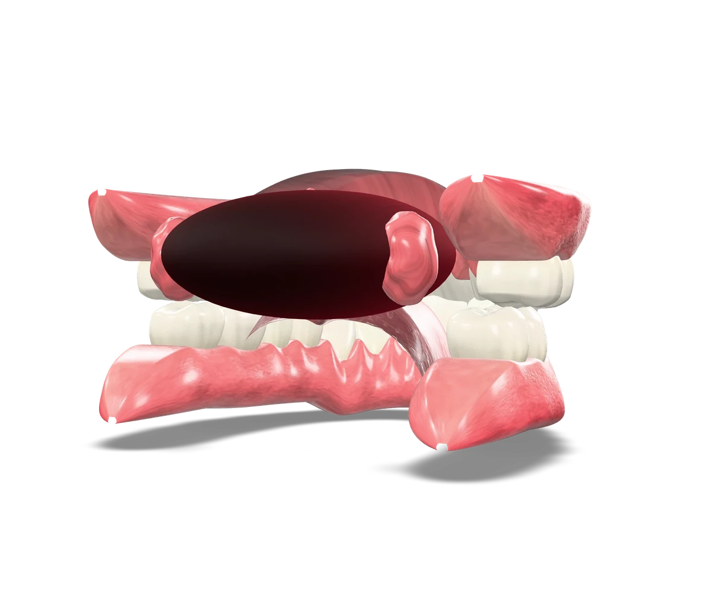

Tishlaringiz sarg'ayib ketgan
Qahva, choy, chekish yoki yosh tufayli rang o'zgargan. Professional oqartirish yoki vinirlar bilan rangni tiklaymiz.
Toshkent · Estetik stomatologiya
Og'riqsiz davolash, to'liq stomatologik xizmatlar va har bir bemorga individual yondashuv. Tabassumingizni yuzingizga mos, tabiiy ko'rinishda yaratamiz.

Kim uchun
Qahva, choy, chekish yoki yosh tufayli rang o'zgargan. Professional oqartirish yoki vinirlar bilan rangni tiklaymiz.
Implantatsiya va tabiiy ko'rinishdagi qoplamalar bilan chaynash va tabassumni to'liq tiklaymiz.
Suratga tushishda og'zingizni yopasizmi? Biz ishonchni qaytaramiz — tabassum dizayni sizning yuzingizga mos.
Zamonaviy behushlik, yumshoq yondashuv va tushunarli reja: har bir bosqichni oldindan tushuntiramiz.
Natijalar
Metodika
Har bir ish shaxsiy reja asosida: avval ko'rasiz, keyin rozi bo'lasiz, so'ng boshlaymiz.
Ko'rik va tishlar holatini aniq baholash, kerak bo'lsa tasvirga olish.
Yuz mutanosibligiga mos shakl, rang va usul tanlanadi — natija oldindan muhokama qilinadi.
Reja va narx tushuntiriladi, savollaringizga javob beriladi, shundan so'ng davolash boshlanadi.
Og'riqsiz davolash: zamonaviy behushlik va individual yondashuv.
Nazorat ko'riklari va natijani uzoq saqlash bo'yicha shifokor tavsiyalari.
3D ko'rik
Haqiqiy 3D modelni ushlab aylantiring, yaqinlashtiring va og'izni oching: tishlar va milkning tuzilishini yaqindan ko'ring.
3D model yuklanmadi. Sahifani server yoki hosting orqali oching.
Sharhlar
Oldin va keyin
Slayderni suring. Hozircha namunaviy rasmlar.
Portfolio
Savollar
Xizmat muddati material, tishlar holati va parvarishga bog'liq. Konsultatsiyada aniq muddat va kafolat shartlarini shifokor tushuntiradi.
Og'riqsiz davolash — bizning asosiy tamoyilimiz: zamonaviy behushlik va yumshoq yondashuv. Xavotirli bemorlar uchun alohida e'tibor beramiz.
Klinik oqartirish tish emalini buzmaydi. Boshlashdan oldin tishlar holati tekshiriladi va individual protokol tanlanadi.
Narx tanlangan usul va tishlar soniga bog'liq. Aniq reja va narxni konsultatsiyada bilib olasiz — yozilish uchun havolani bosing.
Bu yuz mutanosibligiga mos, tekis va oq tishlar qatori. Odatda vinirlar yordamida yaratiladi; qaysi usul sizga mos ekanini shifokor aniqlaydi.
Konsultatsiya
Raqamingizni qoldiring yoki to'g'ridan-to'g'ri yozilish sahifasiga o'ting.